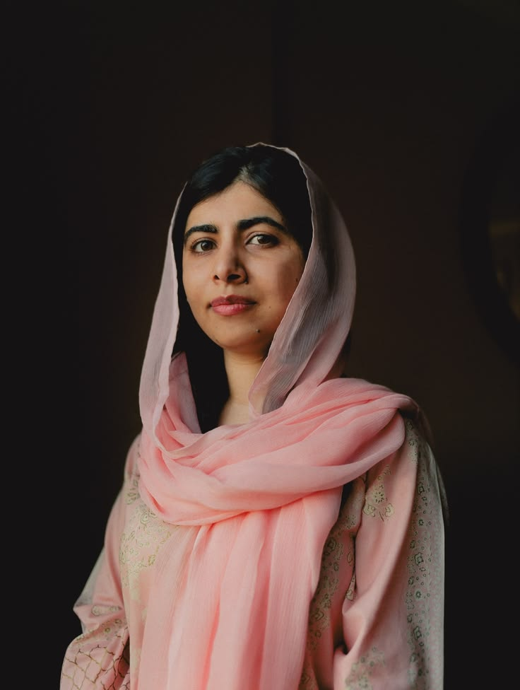
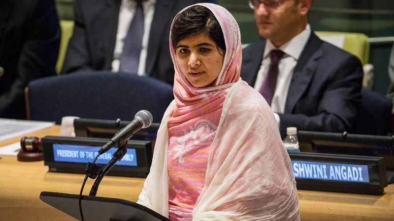

أولاً: بطاقة التعرف والصورة الشخصية

الاسم الكامل: ملالا يوسفزي (Malala Yousafzai)
سنة الميلاد: 1997 (على قيد الحياة)
مجال التميز: النشاط الحقوقي ودعم تعليم الإناث
ثانياً: أبرز الأعمال والمبادرات
كرست ملالا صوتها لتمكين اليافعات وحقهم الأساسي في الذهاب للمدارس من خلال:
- تأسيس "صندوق ملالا" (Malala Fund) وهي منظمة غير ربحية لضمان حق التعليم المجاني والآمن للفتيات.
- كتابة مدونة مذكرات شهيرة لهيئة الإذاعة البريطانية (BBC) تحت اسم مستعار لكشف الانتهاكات ضد المدارس.
- تأليف كتاب السيرة الذاتية الأكثر مبيعاً عالمياً بعنوان "أنا ملالا".

ثالثاً: التحديات والعقبات التي واجهتها
واجهت ملالا تهديدات وجودية مباشرة بسبب دفاعها المستميت عن قيم العلم والتعليم:
- محاولة الاغتيال: تعرضت لإطلاق نار مباشر برصاصة في الرأس وهي في حافلتها المدرسية بعمر 15 عاماً من قِبل جماعات متطرفة.
- التهجير والنزوح: اضطرت لمغادرة وطنها باكستان والعيش في بريطانيا لمتابعة رحلة العلاج المعقدة والدراسة في بيئة آمنة.
- التهديد المستمر: واجهت هجمات إعلامية وحملات تشويه لثنيها عن إكمال رسالتها الحقوقية حول العالم.
رابعاً: الإنجازات التاريخية والجوائز
- أصغر شخص في التاريخ يحصل على جائزة نوبل للسلام وعمرها 17 عاماً فقط (عام 2014).
- إلقاء خطاب تاريخي ملهم أمام الجمعية العامة للأمم المتحدة للمطالبة بالتعليم الشامل.
- التخرج بمرتبة الشرف من جامعة أوكسفورد البريطانية العريقة في مجالات الفلسفة والسياسة والاقتصاد.